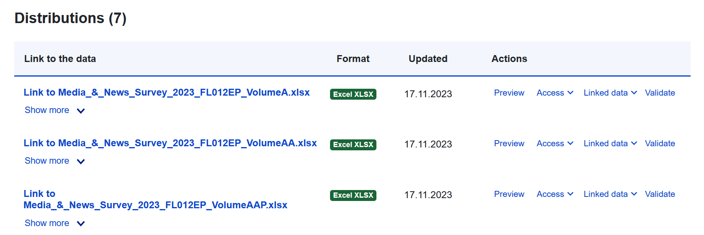
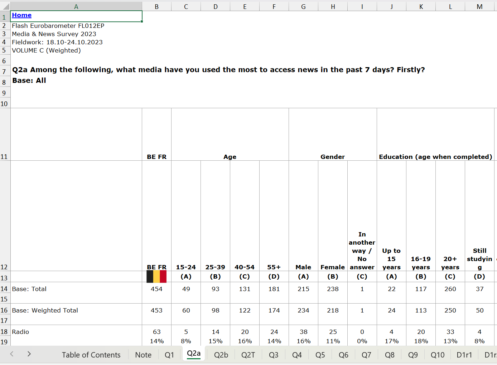
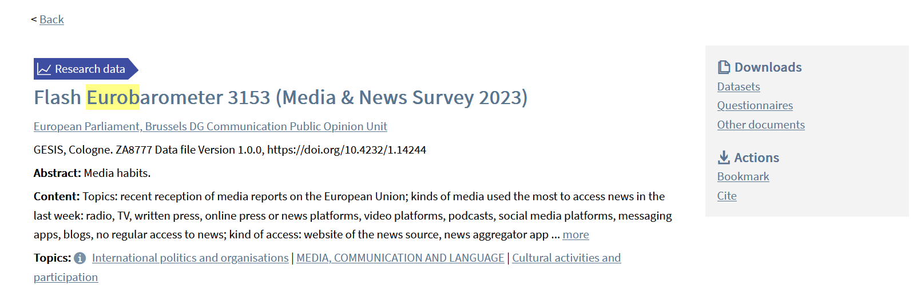

9 Finding and Evaluating Data
Over the course of the seminar you will be asked to read, and critically evaluate quantitative empirical articles. You will have to do so the same while formulating an argument for your thesis project. And, you will then have to produce your own quantitative analyses for this project as well. This document provides links to some resources that will aid you in this process.
9.1 Study Design and Interpretation
The books, book chapters, and articles that you read during the seminar and in preparation of your thesis project will often feature both descriptive claims (e.g., claims about the extent of political knowledge in a particular country) and causal or explanatory claims as well (e.g. that political knowledge causes political tolerance). One important task is to consider the validity of these claims; you should not presume that a reading on a course syllabus, or one published by an academic journal or publishing house, is the final word on the subject as science is cumulative, research is fallible, and new conditions or contexts may require revision of what existing research leads us to expect.
In thinking about the claims made by a piece of empirical research you should think about the following questions:
- Is the underlying theory logically coherent?
- Are the specific empirical claims made by the resource plausible given this theory and other things we now about the world?
- How was the data generated? (who was surveyed? what experimental conditions are involved? how are key constructs measured?)
- Why did the researchers opt for these methods (and, crucially, what choices did they make that could have been made otherwise?)
- How confident should we be about an author’s findings given these design choices?
Here are some resources to aid you in thinking about these questions. Of course, you can also ask me for my thoughts as well!
- Evidence in Governance and Politics (EGAP)
- This website features several short and accessible guides for thinking about research design and causal inference. Their particular focus is on experimental work, but much of what they discuss is relevant in non-experimental settings. See their Methods Guides section.
- Some pages of particular relevance:
- Research Design in Political Science by Dimiter Toshkov
- This is a very nice book about the nitty gritty of doing research - on how to think about concepts, the nature of causal inference, and how to do empirical research (and what problems might arise when doing so). It thus goes a bit deeper than the shorter EGAP guides and covers all steps in the research process as well.
- The following chapters are particularly relevant: “Theory in the Research Process”, “Concepts and Operationalizations”, “Measurement and Description”, “Experimental Designs”, and “Large-N Designs”
- Survey Research
- Much of what we know about how ordinary people think about politics comes from survey evidence (sometimes paired with an experiment, oftentimes not).
- The political scientist Adam Berinsky provides a nice discussion of some of the important choices that survey researchers must make when designing and implementing surveys and how these choices may influence what can learn about politics in this article.
- Pew Research is a major polling firm that performs surveys around the world (although more so in the United States). Not only might they be a valid source of data for your project, they also provide some resources for learning more about survey methods. Their Methodological Research talks about specific issues in survey research (e.g., debates about how best to measure gender or the difficulty of asking questions about religion in China) that may be interesting although not necessarily directly relevant for you. On the other hand, their YouTube page provides a nice series of short videos on survey methods that may be helpful in understanding survey research more generally.
- Experiments
You may be interested in experiments as a method for understanding the world and perhaps even as a method to be employed in your own project.1
If you want to learn more about experiments, then I heavily recommend reading through the Toshkov chapter on the subject and skimming through the book Experimental Thinking: A Primer on Social Science Experiments by James Druckman to better understand the possibilities on offer.
1 Students in my BAP have, in the past, fielded survey experiments for their projects. I am certainly open to this as a method. If you are interested in this, then I’d ask you to keep in mind the issue of time and feasibility. Collecting your own data does add some steps to the thesis writing process - you will need to come up with the experimental protocols, create the survey (using, for instance, Qualtrics), field the survey, and then analyze it. This can be doable in the short time span available to you (especially if you are replicating/extending an existing experimental design), but does require you to be a bit more ‘on the ball’ in terms of time management. If you’re interested in doing this, then you should talk with me as soon as possible to discuss your ideas.
The foregoing focuses on the logic of research design - on why researchers might collect data in the way they do and the potential consequences of research design on the findings that result. Understanding a study’s findings also depends on reading the regression tables and figures present in the article as well, something which may feel overwhelming at times. Here are some useful resources for helping you interpret research:
- Reading a Regression Table: A Guide for Students by Steven V. Miller
- 10 Things to Know about Reading a Regression Table by EGAP
9.2 Data Resources
You will need data for your thesis projects. The type of data required is determined by your research question and theory. However, I suspect that many of you will make use of existing data sources such as existing surveys and administrative data. How can you identify (and then access) useful data for your projects?
There are three resources you can use for figuring out what data to use for your thesis project.
The first are the various readings you have done in the course of your review of the literature related to your topic. They are a natural first place to begin as they are, of course, on the same topic as your own thesis. As you read and research, it may make sense to create a spreadsheet to keep track of the various data sources used in the myriad articles you read and what appears to be in them. This may have the benefit of also revealing limitations in existing work (or, at least, the work you have reviewed). For instance, if you notice in your spreadsheet that most of the data comes from European data sources, then this could help you motivate the use of non-European data as part of your answer to the ‘so what’ question for your thesis.
A second resource are the various websites linked below in the “Data Repositories” sub-section. ICPSR and GESIS are both data repositories wherein researchers have deposited their data. Each enables you to perform a keyword search that may enable you to find datasets connected with your thesis topic. The “dataset with political datasets” webpage, meanwhile, is a very helpful one-stop shop for finding links to a wide array of relevant data sources in political science.
Finally…you have me! If you’re having trouble finding something, ask me for advice. I may be able to guide you to something that is of relevance to your project, although no guarantees are provided here!
9.2.1 Data Repositories
- A Dataset with Political Datasets: This webpage provides links to a huge array of datasets, including both mass level public opinion surveys as well as data on elites and institutions. You can even download the list as a spreadsheet that includes additional data about the data (meta!), such as what regions the resource covers, what time frame, and so on. This is a great place to begin. Scroll down to “Citizens” and take a look.
- Gesis : A data repository run by the Leibniz Institute for the Social Sciences. Particularly relevant if you are using Eurobarometer data (see Section 9.2.3 section below) or European Election Studies data.
- ICPSR : Another data repository, this one run by the University of Michigan
- Pew Research: A leading public opinion firm with polling data available worldwide. See here on how to access their data.
9.2.2 Some acronyms to know…
Some surveys tend to come up quite a lot in our discussions. I may refer to them by their acronym due to their seeming ubiquity. Here are some examples:
- ANES: American National Election Studies.
- WVS: World Values Survey
- EVS: European Values Survey
- ESS: European Social Survey
- CSES: Comparative study of Electoral Systems
- EES: European Election Studies
9.2.3 A Note on the Eurobarometer
You may be interested in public opinion within Europe. One useful resource might then be the Eurobarometer, which provides access to a series of surveys in EU member states going back quite a long time. For instance, you might be interested in media use and EU attitudes and head to their website to search for relevant surveys. Let’s say you turn up their Media & News Survey (2023) and think it would be a perfect fit for your project. Scrolling down that page, you might find this link:
Fantastic - you’ve found a survey and its data! Surely, all you have to do is follow that link and you can download the relevant data. … Well, not quite. Following that link will give you access to a variety of excel spreadsheets with data in them:

However, those data files are not the ones that you will want. These data files are Excel spreadsheets that provide summary statistics for the survey, e.g., the % of people within a particular country and age range that give a particular answer:

This is almost certainly not what you want as it’s not the underlying raw individual-level data. Even if you are interested in explaining variation at the country-level (e.g., why might the percentage saying yes to a question vary between countries rather than between individuals), the files provided via the link above would be a pain in the ass for doing that because data is organized into separate files for each country and the files themselves are badly organized for use in R (or some other statistical program).
If you want to use Eurobarometer data, then you instead need to go to the GESIS data repository and search there for the specific survey that you’re interested in (or, perhaps, simply for “eurobarometer” - although from there you’ll need to find the one you want from the multitude of Eurobarometer surveys). Here is the page for the survey used in this example. It provides access to the raw data, questionnaires, and other documents (under Downloads). Note that you need to create a free account to access these files.

So, you Eurobarometer interested folk have been warned…
9.2.4 R Packages for Accessing Data
One way to obtain data is to go to the website for a survey (or, perhaps, a repository that contains its data), download the relevant data file(s) to you computer, load them in to R, and begin working. However, some data sources can be directly accessed via R packages. Here are some relevant examples:
-
- Installing this package will download the most recent Varieties of Democracy (V-Dem) data files.
- You can find a vignette on how to use this package here
-
- You might need/want to access data from the World Bank (e.g., data on a country’s unemployment rate). This package enables you to query the World Bank’s databases from R and then download the data directly without needed to visit their webpage. (In practice, I’d recommend using the World Bank’s website to help you search for the relevant indicator and then using the package to download it.)
- Steven V. Miller provides a helpful vignette on how to use this package.
-
- This package enables access to the data provided by Our World in Data resource.
-
- A resource for accessing data stored on the Gesis repository.
- Frederick Sold provides a vignette discussing how to set up and use the package.